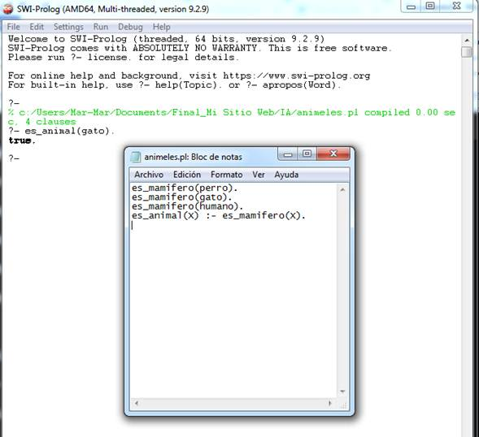

¿Qué es una base de conocimientos en
SWI-Prolog?

¿Qué es una base de conocimientos en SWI-Prolog?
En SWI-Prolog, una base de conocimientos es el conjunto
de hechos y reglas que se almacenan en un archivo y que representan el
conocimiento del sistema sobre un determinado dominio. Este archivo es la
fuente principal de información que el motor lógico de Prolog utiliza para responder consultas y realizar inferencias.
¿Qué contiene una base de conocimientos?
Una base de conocimientos en Prolog está formada por:
· Hechos: Son afirmaciones simples que
representan información directa. Por ejemplo:
es_mamifero(perro).
le_gusta(julia, pizza).
· Reglas: Son expresiones lógicas que
permiten deducir nueva información a partir de los hechos. Por ejemplo:
es_animal(X) :- es_mamifero(X).
Esta regla dice que X es un animal si X es un mamífero.
· Consultas: Una vez cargada la base de
conocimientos, se pueden hacer preguntas al sistema, como:
?- es_mamifero(perro).
Y Prolog responderá si es verdadero o falso según la base.
¿Dónde se guarda y cómo se usa?
· La base de conocimientos se guarda en
un archivo con extensión .pl.
· Para usarla, se consulta desde el
entorno de SWI-Prolog
· Una vez cargada, se pueden hacer
consultas usando el prompt del sistema.
Ejemplo de base de conocimientos simple
Archivo animales.pl:
es_mamifero(perro).
es_mamifero(gato).
es_mamifero(humano).
es_animal(X) :- es_mamifero(X).
Consulta en SWI-Prolog:

La base de conocimientos permite que el sistema "razone"
a partir de hechos básicos y reglas lógicas. Aunque los hechos sean simples,
mediante reglas se pueden obtener conclusiones complejas sin tener que
programarlas directamente como en otros lenguajes tradicionales